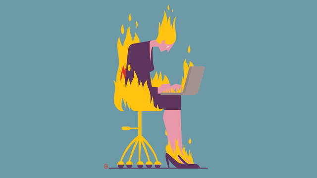

Job Killing You??
Job stress can fray nerves, keep you up at night, and contribute to health problems such as heart disease and depression.
“Chronic job strain can put both your physical and emotional health at risk,” says Paul J. Rosch, MD, the president of the American Institute of Stress.
Finding the source of your stress is the first step to fighting it, but that’s easier said than done. Fortunately, experts have identified specific work situations that are likely to make your blood boil.

Overworked underling
The profile: You're busy from the time you get to work until the time you leave, but you have little freedom while you're there.
You don't have much say over how you do your job or the types of projects you work on, and you're always on someone else's schedule.
The solution: These types of jobs—known as "high-demand, low-control"—tend to cause a great deal of psychological strain, says Peter L. Schnall, MD, an occupational stress expert at the University of California at Irvine.
Even if you can't make your job less demanding, finding ways to get more involved in decision-making will help ease the stress, research suggests.

Along?
The profile: You feel like you’re all alone, and not in a good way. If you require help or guidance, your boss won’t give it to you, and when you need to vent, you don’t have a trusted ally to turn to.
The solution: A good support system at work includes both practical support from your bosses (the resources and help you need to do your job well) and emotional support from colleagues. Too little of either could make you feel stranded on irritation island.
Work on communicating your needs, both practical and emotional. If you want your boss’s help, be as specific (and persuasive) as possible, and make connecting with co-workers a priority.
Do You Know?
Commuting to work by bike can help you start your day with less stress, new research suggests, and the benefit may have lasting effects through the afternoon and evening.
The three authors of the new study, which was published in the International Journal of Workplace Health Management, all bike to work and wanted to see if they could find empirical evidence for what they personally knew to be true: that a morning bike ride can boost people’s moods and reduce their stress..

Sleep
How well you snooze at night has a lot to do with how you spend your days—sleep quality has been linked with everything from diet and exercise to electronic screen use.
Now, a new study suggests that something a little less tangible may play a role, as well:
People who have a strong purpose in life tend to sleep better through the night, with fewer symptoms of sleep apnea and restless legs.